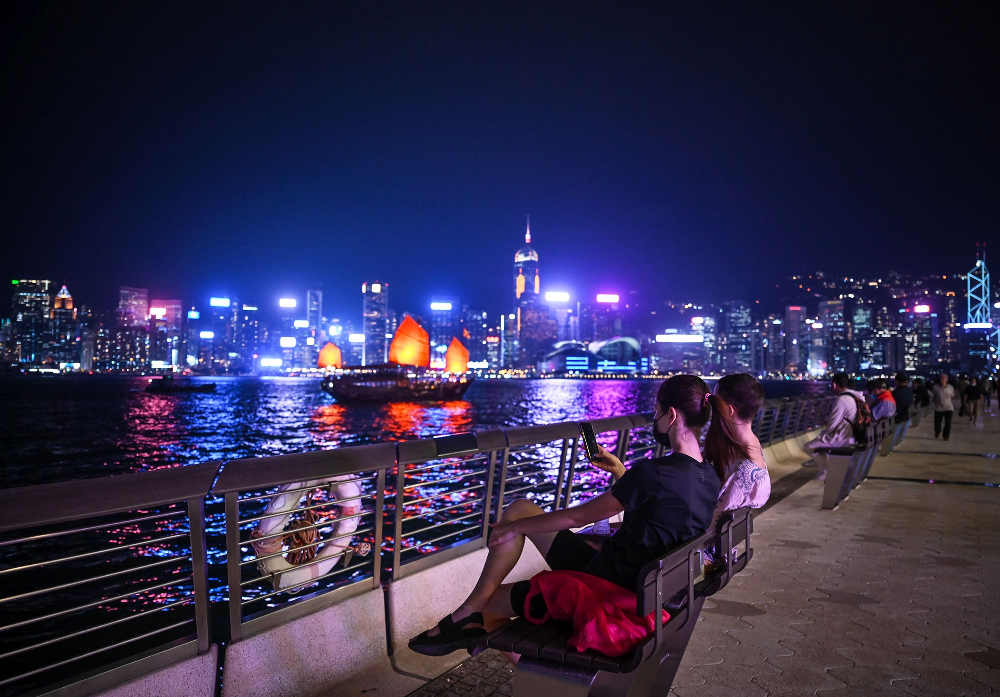

.png)

 Best for Photo
Best for Photo
Victoria Harbour is a natural, sheltered deep-water harbour situated between
Hong Kong Island to the south and the Kowloon Peninsula to the north. Its
strategic depth and location have made it one of the world’s most important ports,
contributing to Hong Kong’s rise as a major international trading and maritime hub.
The harbour sees extensive marine traffic, including cargo vessels, cruise ships, and
connections to the busy Kwai Tsing Container Terminals.
The harbour is also an iconic cultural and visual landmark. It is flanked by some of Asia’s
most recognizable skyscrapers, such as the International Finance Centre, International
Commerce Centre, Bank of China Tower, and Central Plaza. Visitors enjoy scenic viewpoints
like the Tsim Sha Tsui Promenade, Avenue of Stars, the Peak Tower rooftop, and waterfront
parks. The nightly multimedia show, A Symphony of Lights, illuminates buildings on both sides
of the harbour with lasers, LED displays, and synchronized sound, creating one of the world’s
largest permanent light-and-sound spectacles.
Planning tip: Victoria Harbour, take a Star Ferry ride, visit the Tsim Sha Tsui Promenade for photos,
and stay until evening to watch the spectacular A Symphony of Lights show.